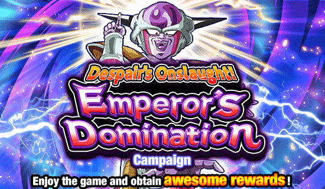
A última celebração antes do aniversário.
Que bagunça manokkkk
Essa celebração tá em completo caos com eles tentando unir as versões já que o tempo tá acabando, vamo ver o quão caótico isso pode ser
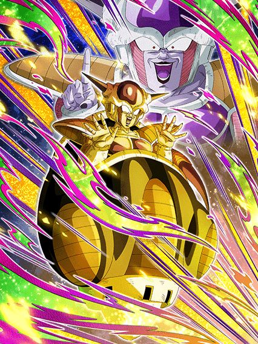
Com licença, meu card não está restrito o suficiente, pode colocar mais restrições inúteis.
O Freeza é um exemplo de card que seria bom se não fosse restrito em tudo, já que ele não tem nada se você usar ele em qualquer outro time
Pra começar, o Freeza tem uma intro restrita a ter pelo menos 2 aliados Space-Traveling Warriors, o que é até aceitável e bem útil já que ele ganha 100% de ATK e DEF e um adicional com 50% de chance de ser super por 5 turnos
Aí começa o problema, já que o Freeza ganha 20% de DEF e 10% de chance de crítico por aliado Terrifying Conquerors, e fazendo as contas você já vê que essa defesa vai fazer falta se não tiver um time completo
E ainda não acaba, ele obviamente tem que ter buffs com a restrição de enfrentar um inimigo Pure Saiyans né
E pra completar a desgraça, ainda tem q ser Pure Saiyans e Low-Class Warrior, se tiver, o Freeza ganha mais dano, lança um super attack adicional e ainda aumenta o crítico em 50%, ou seja, se você tiver com um time Terrifying Conquerors, ele dá crítico garantido
E aí o Freeza tem uma active skill que felizmente tem uma condição de inimigo Pure Saiyans também mas que pelo menos pode ser ativada no turno 5 caso não tenha
E o Freeza stacka 30% de ATK no super attack, então a active depois de stackar vai obviamente dar bastante dano
Acho que ficou bem óbvio o problema do Freeza, já que se você tirar todas as restrições dele, ele vira um card muito bom, mas infelizmente do jeito que ele tá, não dá pra usar ele em basicamente nada
É engraçado pq o time inteiro dele basicamente não tem personagens usáveis, alguém ajude esse rapaz.
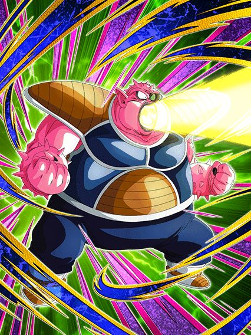
Não dá pra entender se esse cara devia ajudar o Freeza ou não.
Sendo bem direto, essa cara era pra ser o card q fica no slot 1 pra proteger o Freeza, mas ele não linka bem com o Freeza então ele tá mais atrapalhando que ajudando, já q ele não tem Big Bad Bosses nem nada
Esse cara é um suporte pra Inhuman Deeds, tem crítico, tem adicionais, em geral bem decente, e caso tenha um Freeza no time, ele lança outro adicional com 70% de chance de ser super também
E caso o Freeza esteja no turno com ele, ele tem defesa ativa, reforçando a ideia de ele ser um personagem slot 1
Masss infelizmente ele não é um tank, a defesa dele não é boa e os links horríveis dele só pioram, assim fica difícil ele fazer a única coisa q ele deveria fazer né?
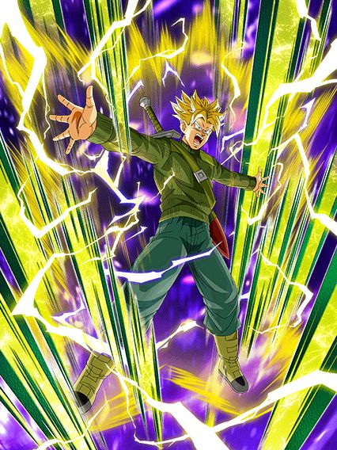
Me diz.
Me diz se é possível defender o Global.
Uma pessoa desavisada vai perguntar "Ué, q que isso tá fazendo aquiKKKK osh", e uma pessoa que sabe oq tá rolando também vai fazer essa pergunta
Se lembra do Goku Black Rosé PHY? ESSE CARA é o card secundário dele, agora me explica COMO ele veio parar aqui?
Foi uma situação bem engraçada, já que o Goku Black foi um Global first e chegou no JP agora, e ele do nada veio com esse Trunks, deixando todo mundo confuso e com mais ódio da bagunça que o Global anda sendo
Pelo menos ele veio pra gente também, desse jeito estúpido aí entrando no banner do Freeza
Bom, o Trunks em si é um card bem decente, o problema é que ele precisa de um time inteiro Time Travelers que pode ou não ser difícil, mas eu não diria que é a pior coisa não
Com o time completo ele tem 300% de ATK e DEF, 60% de chance de desvio e chance de crítico também
Além de ele ter uma mecânica bem quebrada de aumentar a chance de crítico e desvio pra 90% se o HP estiver abaixo de 70%, é bem desbalanceado isso aí, então ele pode vir a ser útil
Em geral ele é um card bonito, tem uma OST de intro maneira e na minha opinião as animações dele são melhores que as do Goku Black (KKKKKKKKKK)
Certamente o meu personagem favorito desse momento icônico aí
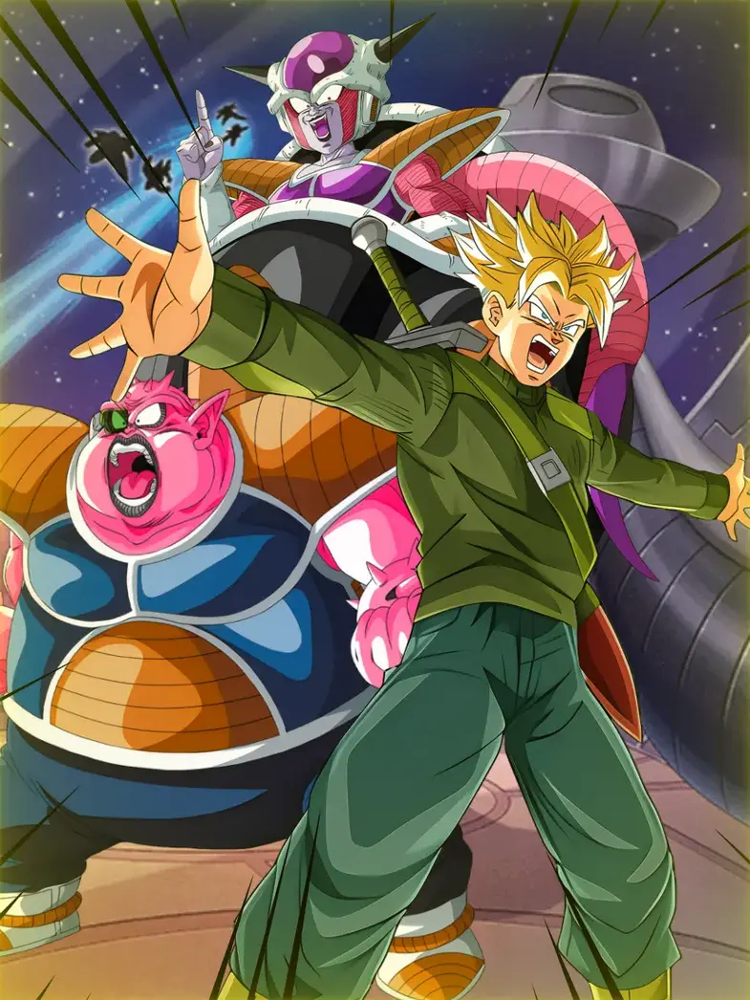
É canon, pode confiar.
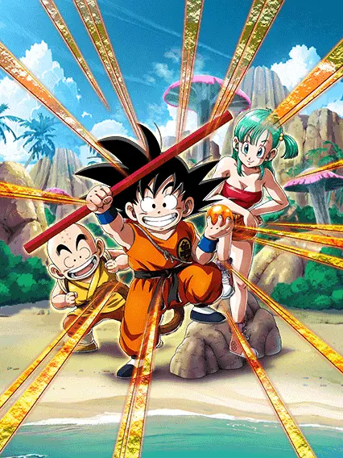
Can we get much higher?
Preciso falar de novo? Os F2Ps de DB Saga não erram.
Esse é o Dokkan Awakening final do Gokuzinho F2P TEQ que ganhou um Awakening um tempo atrás e é simplesmente genial, eu acho eles incríveis demais
Bom, eles são um suporte desvia-ou-morre, mas eu não diria que eles são muito frágeis não
Como todo personagem DB Saga, eles querem ter aliados DB Saga no time pra ter o máximo da passiva (até que dá pra usar eles em Earth-Bred Fighters, mas pq vc faria isso?)
O único problema deles é que o suporte deles de 30% de ATK e DEF só ativa depois que eles dão super, e você jamais deveria usar eles no slot 1, então fica bem sem sentido infelizmente
O motivo de não poder usar eles no slot 1 é que eles tem 30% de chance de desvio, sim, uma das mecânicas que eu mais desprezo nesse jogo, mas a boa notícia é que não acabou pra esse card, já que eles ainda podem ganhar um EZA futuramente que vai com toda certeza aumentar o desvio pra 50% (por favor, Akatsuki, estou implorando)
Bom, eles tem uma Active Skill bem engraçada que é bem útil até
A Bulma usa sua técnica mais forte que é distrair o oponente, e isso quebra 1 ação do inimigo e aumenta o desvio em 20% no turno
Por sinal que OST incrível essa Active tem slk kkkkkkkk é muito boa, é praticamente a OST do Pilaf LR parte 2
E se você tá querendo entender pq eu chamei esse card de One Piece LR, é pq a animação na arte de LR deles muda completamente
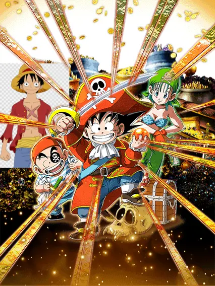
Quer uma dica? Olhe a arte normal deles e talvez ache uma coisa q deixou passar..
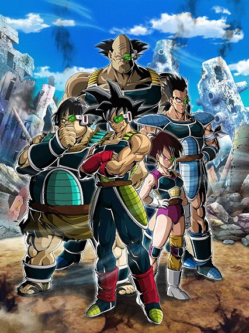
Esse card foi lançado em 2020 e mais de 4 ANOS DEPOIS finalmente dá pra deixar eles rainbow.
Por sinal, com essa celebração eles decidiram fazer um remake dos eventos do time Bardock e as forças do Ginyu também, era um saco pra farmar eles, então coisa boa pros iniciantes
Bom, eles fazem a função de suporte muito bem pra um card F2P, já que eles simplesmente dão 70% de ATK e DEF pra Team Bardock, achei bem balanceado
E é bem óbvio que eles precisam do máximo de aliados Team Bardock no time pra ter uma passiva decente, mas pelos é boa de vdd, uma defesa minimamente decente, dano muito bom, super adicional garantido, só coisa boa
Em geral um suporte decente pra um time todo F2P, é usável
Lógico, não dá pra levar eles na red zone do Kid Buu e esperar q eles tankem tudo de graça, mas dá pra levar eles em alguma coisa mais tranquila pelo menos
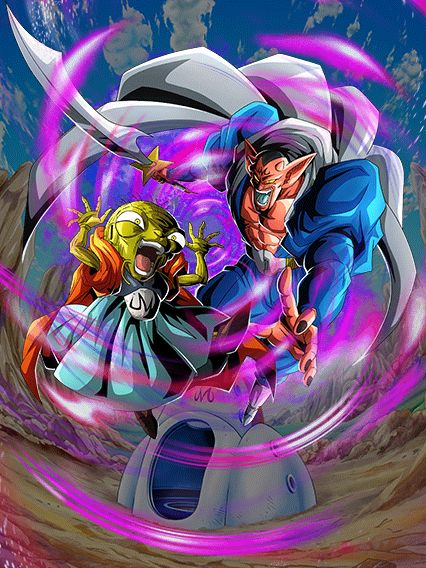
PQ ELES SÃO TÃO BONS???
Esses caras são simplesmente absurdos num time Majin Buu Saga e isso É PERFEITO
É ISSO DOKKAN, ESSA DEVERIA SER A ESSÊNCIA DE UM PERSONAGEM F2P
Eles são restritos a apenas 1 time, MAS ELES SÃO BONS NESSE 1 TIME
Num time Majin Buu Saga completo, esses caras tem 70% de chance de desvio, lançam um super attack adicional caso estejam com 22 de Ki ou mais, debuffam em ambos supers e ainda são suporte de 40% de ATK e DEF pra Majin Power, o que mais você pode pedir?
A gente precisa de mais cards assim, eles são super úteis nesse 1 time q eles são usáveis, pq é tão difícil criar mais cards nessa mesma fórmula? Não deveria ser..
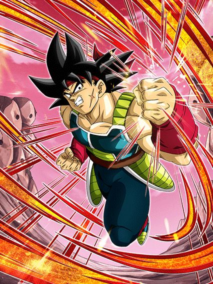
Ele realmente é o pai do raditz.
Eu realmente me impressionei em como eles arruinaram esse cara, é absurdo
É praticamente o mesmo problema do goku black int, os caras tinham uma base perfeita pra um EZA e aí o EZA deixa eles horríveis de qualquer jeito
Bom, o grande problema do bardock é que ele quer um time inteiro Low Class Warrior, já que assim ele tem mais ATK e 50% de redução de dano, que é bem forte
Mas isso é praticamente impossível já que não tem personagens bons o suficiente na categoria pra montar um time e assim o bardock vira um pedaço de vidro frágil
Não só isso, mas ele também tem uma restrição de precisar enfrentar um inimigo Wicked Bloodline pra ter dano efetivo contra tudo
E não acabam as restrições, já que caso ele tenha um aliado Low Class Warrior no turno, ele lança um adicional com 50% de chance de ser um super attack, e ele stacka 50% de DEF no super, então quanto mais supers, melhor
O problema é que ele stacka devagar e se você tentar usar ele em um time normal, ele não vai ter a redução de dano, e aí você chora
Infelizmente a forma base do bardock é simplesmente podre, ele não consegue se sustentar mesmo stackando e o dano dele é medíocre também
Pelo menos ele transformado é um pouquinho melhor..
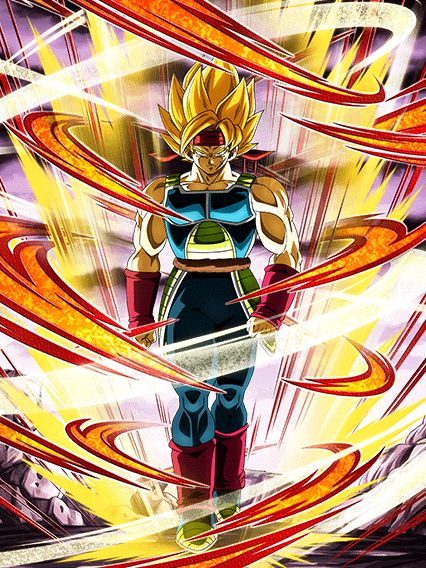
NÓS VAMOS CRITAR GARANTIDO COM ESSA!!!!!🗣🔥🔥
O bardock fica levemente decente transformado, já que ele tem dano efetivo permanente, tem 18% de redução de dano, 30% de chance de crítico e de desvio e tem até um adicional com 70% de chance de ser um super
Lógico que 18% de redução não é muita coisa, mas felizmente ela aumenta pra 34% nos primeiros 5 turnos da transformação, então é um pouquinho melhor né
A chance de crítico também ganha um buffzinho e fica em 48% nesses 5 turnos, então vença o inimigo rápido né
Bom, o grande foco do bardock é que ele sempre foi o "card destruidor de Wicked Bloodline", e esse se manteve como propósito dele
Mas surpreendentemente ele apenas lança um super attack adicional garantido e dá crítico garantido contra um inimigo Wicked Bloodline, e até que isso não é ruim não, já que é a única parte restrita dele
Em geral, o bardock é um EZA ruim por ter a forma base MUITO restrita, e mesmo cumprindo as restrições, ele ainda é um card muito instável, considerando que hoje em dia só ter bastante redução de dano não é suficiente
É triste, pq ele era um EZA muito esperado por todo mundo, mas eu sigo acreditando que o bardock teve quer ser mid pra que o EZA da Kefla STR e do Gotenks INT fossem muito brabos
E só pra constar..
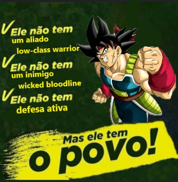
Créditos ao Dollynho pela mais pura realidade
Eu não tenho certeza de que povo, mas certamente ele tem.
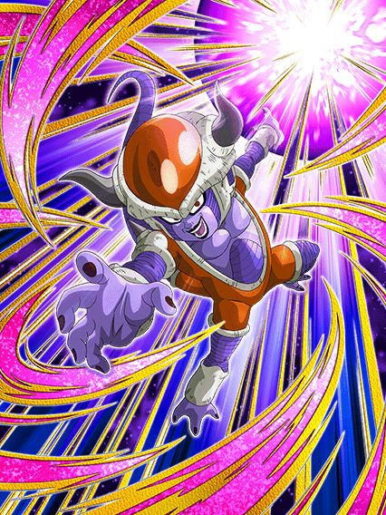
Ele é um nuker genérico.
Esse cara ganha 30% de ATK e DEF por orb pega, e caso sejam orbs INT, aumenta pra 60% de ATK e DEF
Uma coisa legal dele é que caso tenham pelo menos 2 aliados Inhuman Deeds no time, ele ganha 50% de chance de desviar e 50% de chance de crítico, então ele até consegue dar um dano muito bom se pegar bastante orbs
Mas aí q tá um problema, já que ele simplesmente não é orb changer 💀
Aí não tem nem oq fazer né, mas ele é um F2P decente sim
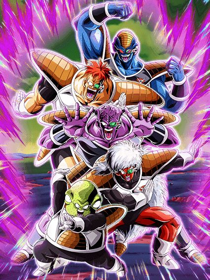
Eu juro que os jogos mobile de Dragon Ball fizeram a gente amar as Forças do Ginyu.
Bom, esse é um card maravilhoso mas lançado no pior momento possível, por motivos que irei explicar depois..
Apesar disso, esse card é absurdamente forte e muito lindo, as animações deles são muito boas
Mas já deixo avisado: Eles precisam de um time Special Pose
Pra começar, eles tem uma intro incrível que ativa caso tenham pelo menos 5 Special Pose no time (pô, é mais fácil ter o time inteiro né) e essa intro dá um suporte de 25% de ATK e DEF por 3 turnos, que é muito forte obviamente
Caso todos os aliados no turno sejam Special Pose, eles tem defesa ativa permanente e tem dano efetivo contra tudo
Além disso, eles ganham 7% de redução de dano e 7% de chance de crítico por Special Pose no time (ambos só vão até 35% mas já tá bom)
Eles também tem um suporte de 25% de ATK e DEF pra Special Pose por 2 turnos caso peguem 1 orb INT ou rainbow
E caso eles peguem 1 orb INT, eles também ganham 50% de ATK e DEF a mais
E você acha que acabou? Nah
Esse card tem uma mecânica de Ki que pode ser meio estranha e super específica
Basicamente, se você tiver específicamente 15 de Ki, eles stackam 50% de ATK e tem 50% de chance de stackar 50% de DEF também (sim, é confuso)
Caso contrário eles não stackam em nenhum outro super, o que é muito estranho e específico, mas se você conseguir pegar esses stacks, vai estar deixando eles ainda mais fortes
E pra finalizar, eles tem uma Active Skill muito quebrada, que dá pra eles 25% de ATK e DEF permanente, e dá um suporte de 15% de ATK e DEF pra todos aliados permanentemente (acho que esse é o único card do dokkan que faz isso)
Então né, deu pra notar que é um card muito restrito, mas quando as restrições são cumpridas, esses caras são um monstro
O grande problema é que eles tão sendo lançados no global sem time, já que quase todos os buffs pra Special Pose vão vir só depois do aniversário na celebração do Toppo, então esse card praticamente não consegue ser usado
Pra mim é bem justo comparar isso com o incidente do "To Be Released"
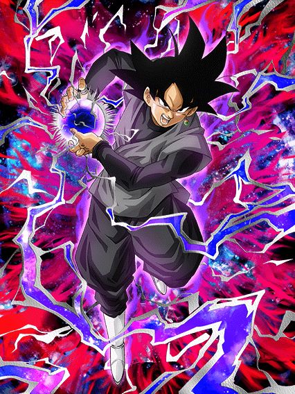
Eu tive que jogar com esse cara pra conseguir formar uma opinião sobre ele.
O motivo de eu ter dificuldade de formar uma opinião é por que esse cara tem um kit cheio de "mecânicas controversas"
Pra começar, ele não tem nenhuma mecânica defensiva e precisa tomar 5 golpes pra buildar a passiva, só isso já é preocupante
E como se não bastasse, esse cara é um nuker, então ele não tem nenhum buff no começo do turno, tudo vem dos orbs q ele pegar até ele buildar a passiva
E pra completar, ele ainda é restrito a ter um time inteiro Super Bosses
Cara, que combinação perfeita pra um desastre de card, mas felizmente ele conseguiu se salvar
A restrição de Super Bosses é bem importante pra esse cara pq ele muda orbs pra rainbow se ela for cumprida, e como Super Bosses tem muitos personagens brigando por Ki, ele ajuda um pouco
Ele em geral ajuda bastante o Goku Black Rosé PHY q lançou esse ano, apesar de eu não gostar muito daquele cara..
Enfim, caso o Goku Black esteja full buildado e tenha pego bastante orbs, ele é sim bem forte e consegue chegar em níveis bem altos de DEF e eu digo isso sendo que o meu só tá em 69%
Honestamente, quando esse cara foi anunciado eu achei que ele era muito mid e ia ser o primeiro Super EZA ruim
Que bom q eu estava enganado, pq eu já tava upando os links dele..
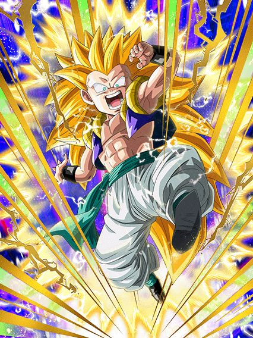
Provavelmente o único personagem da história que tem uma performance pior com um bom parceiro de link.
Bom, uma coisa maneira q esse cara tem é dar 33% de ATK pra aliados Extreme Class e 33% de DEF pra aliados Super Class por 3 turnos no turno de aparição dele, achei muito brabo
O Gotenks é um personagem muito forte, tanto no quesito dano quanto defesa, o único problema é a mecânica específica de Ki dele
Basicamente, o Gotenks ganha 100% de ATK e DEF a mais, 50% de chance de crítico e 50% de redução de dano, mas só se você estiver com 11 de Ki
Só pra informar, sim, o Gotenks consegue dar super attack com menos Ki que o normal, mas ainda sim, pegar específicamente 11 de Ki é meio chato e te impede de linkar ele com o Gotenks INT EZA por exemplo
Mas não é um desastre nem nada, já que esse cara tem 50% de chance de desvio incondicional e a chance aumenta pra 83% caso você tenha 12 de Ki
Então, é, caso você acabe ficando com muito Ki, ele vira um card "desvia ou morre", mas se você constantemente pegar 11 de Ki, ele fica tipo o Majin Buu TEQ EZA
E como eu disse, o dano desse cara é brabo demais, e é bom que ele não é restrito a nada, belo Super EZA.
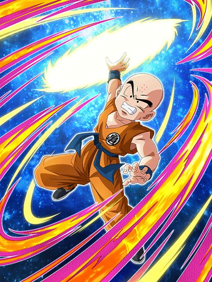
Esse cara tem animações melhores que o Goku Black Rosé PHY.
Esse Kuririn é um F2P muito interessante, ele tem uma intro braba cortando o cabelo e realmente é um card com animações boas
Ele é um suporte de 20% de ATK e DEF pra Earth-Bred Fighters, que é sempre útil né, mas infelizmente ele é levemente restrito
Basicamente, caso todos os aliados no turno sejam Earthlings, ele tem defesa ativa
E caso tenha um Goku no turno, ele tem 50% de chance de desvio e aumenta o suporte pra 40%, bem forte até
Uma coisa interessante dele é que esse buff de ter um Goku no turno muda a partir do turno 5, já que passando desse turno, o Goku só precisa estar no time e não mais no turno junto com o Kuririn
Enfim, ele é um personagem "desvia ou morre" no final das contas, mas eu gostei dele, e por sinal, com ele veio o remake de um evento antigo infernal do filme da ressurreição do Freeza, então já é brabo por isso.
Ok, esse aqui tem bastante coisa, então vamo logo
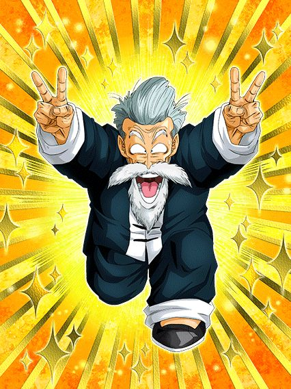 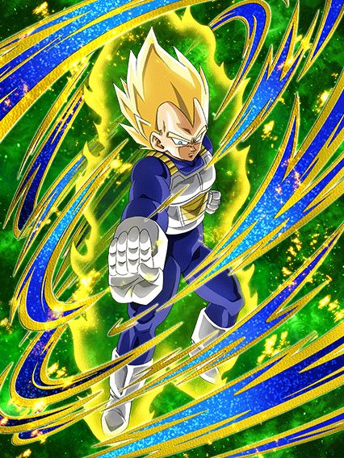
A gente já pode pular pro próximo?
O jackie chun tem uma incrível mecânica de buildar desvio tomando golpes
E sim, ele builda até 70%, o que é decente, mas só tomando esses golpes você já vai de base
O vegeta tem 70% de chance de defesa ativa se tiver um aliado Mastered Evolution no turno.. preciso nem dizer nada né?
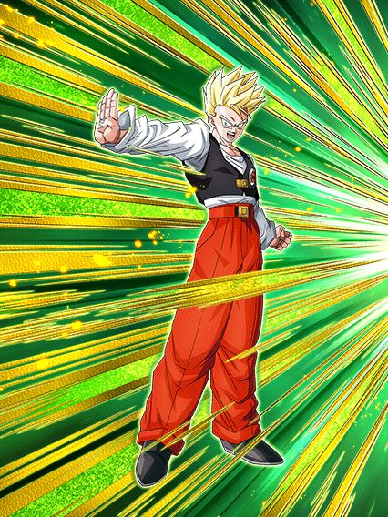
Ele é um bom suporte.
Esse cara já era bem interessante, 30% de ATK e DEF pra Super Class e 58% de redução de dano
O único problema é que ele não tinha nenhuma defesa no começo do turno, então ele não tankava nada só com a redução
Felizmente ele tem até que bastante agora, então ele segue fazendo o papel dele e ajudando o Vegeta SSJ TEQ do dia dos saiyajins
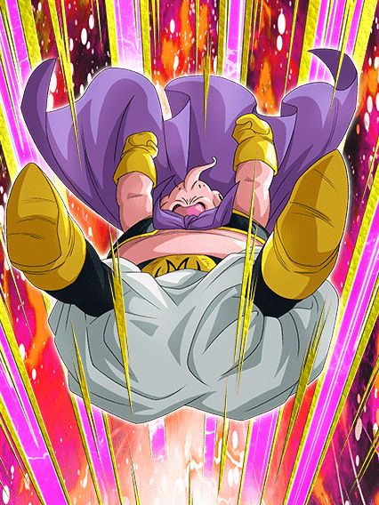
O apelido não é só meramente ilustrativo.
O Mr. Buu é simplesmente genial e é a última peça que faltava pra completar o time Majin Power no Global
Pra começar, esse cara é double orb changer pra rainbow, então já dá pra saber que o mano tá cozinhando
E os orbs não só são suficientes pro time, mas tornam ele uma lenda viva, já que com 2 rainbow orbs, esse cara ganha 50% de redução de dano
E como se não bastasse, ele ainda ganha +10% de redução por orb rainbow pega depois das 2, ou seja, com 5 rainbow orbs esse cara tem 80% de redução de dano
Num time tank pra caramba, com muita cura e que ninguém nem precisa de Ki, como cê acha que é a performance desse cara?
O cara merece o nome de Mr. Goat, melhor personagem F2P
Esse cara substitui o Super Buu AGL LR no time também, que coisa maravilhosa
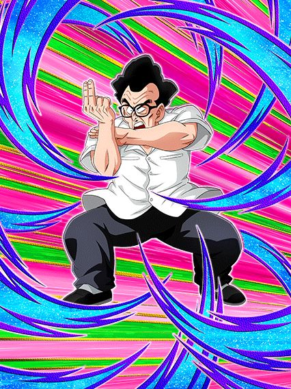
Simplemente o F2P com 90% de chance de desvio.
O Shen é interessante, já que ele base tem 50% de chance de desvio, e se estiver no slot 1 a chance aumenta pra 70%
E pra completar, cada ataque desviado dá 10% de chance a mais no turno (só são +20%, tem esse limite)
Em geral essa é a mecânica interessante dele, já que se ele desviar direito, ele fica praticamente intocável depois de só desviar 2 vezes
Até um adicional com 70% de chance de ser um super attack o cara tem, F2P muito interessante e me deixa curioso pra saber oq podem fazer num EZA pra ele.
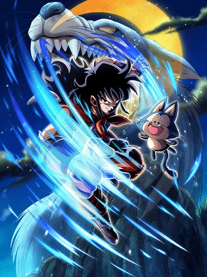
Que belo personagem F2P, certamente ele não vai dar o mesmo dano que o Goku SSJ4 Full Power LR-
Esse Yamcha é um verdadeiro canhão de vidro
O cara tem todo o dano do planeta mas vive por 50% de chance de desviar, perigoso
Ele tem um adicional com 50% de chance de ser um super e lança mais outro adicional de 50% se tiver outro Joined Forces no turno, então esse cara realmente tem todo o foco em dano e nada mais
Por sinal, sim, ele se auto-stuna se tiver uma oponente Peppy Gals, e apesar de agora ele ter um pouquinho de DEF a mais caso aconteça, ele perde o desvio também, então por hora agradeça por não ter uma Red Zone Peppy Gals
Se você gosta de dano, é um EZA brabo, se não, ehh..
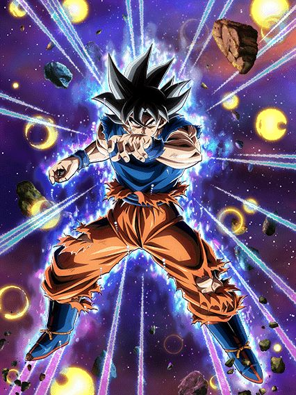
CARAMBA NÃO SERIA ENGRAÇADO SE LANÇASSE UM GOKU INSTINTO SUPERIOR NOVINHO NO JP? SERIA ENGRAÇADO NÃO É? QUE BOM QUE A JUNÇÃO DAS VERSÕES ESTÁ INDO MUITO BE-
...
Esse é um EZA bem interessante, já que ele tá lançando na contagem regressiva pro aniversário, mas enfim
O Goku tem um belo EZA, já que ele tem muito dano e uma defesa decente pra um personagem focado em desvio
Falando do desvio dele, ele ainda diminui depois de 7 turnos, mas agora o Goku ganha +7% de chance de desvio por aliado Representatives of Universe 7 no turno (ele mesmo não conta), então ele tem 84% de chance de desvio que é melhor ainda
Com só um desvio ele já ganha 77% de DEF multiplicativo, e se o desvio for no slot 1 ele ganha 77% de ATK tmb, que é bem forte
Em geral a defesa dele fica decente, ele não vai tankar supers nem nada, mas ele pelo menos não vai se desmantelar inteiro se levar um ataque básico
Apesar do dano dele ser bem alto se você pegar o buff no slot 1, esse cara perdeu o valor de slot 1 por causa dos múltiplos EZAs que irão sair no aniversário
Então normalmente ele não vai ter um dano explosivo pq ele vai tar mais de floater no time
Uma coisa que me deixou triste é que eles não diminuíram os 7 desvios pra buildar a passiva que ele precisa, mas de qualquer forma, um belo EZA e vai ser um ótimo parceiro de link pro EZA do Goku MUI AGL
(por sinal, as 70% de chance desse cara falham mais doq o normal, tome cuidado)
Você chegou ao fim dessa página!
Obrigado por ler tudo, e fica a vontade pra ver outras